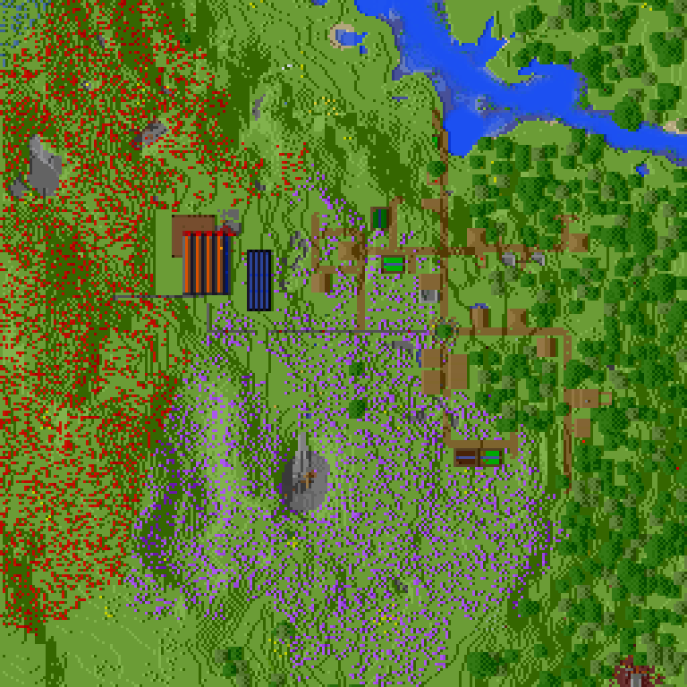

西南工业区本部
基础信息
西南工业区是服内最发达的地区之一，群系主要为草原
坐标范围约为：X轴由-940到-738，Z轴由245到-10的矩形
目前境内居住人口为0，管理者为zhang061009和Tau995
西南区旗如下图：
游戏内则为黑色底色，上带红色字母“N”的旗帜
设施
目前该地区设施如上图所示：
有刷怪塔，刷铁机，村民交易所，农业区等
服主援建的远视主义地图画是该地区的地标性建筑
历史沿袭
- 2022/08/22本部成立
- 2022/08/24修建好了印钞机
- 2022/09/14开阔了第一块飞地 （SWEC）
- 2022/09/23建成了守卫者农场和猪人塔二合一结构的机械
- 2022/10/05因意外事件西南交易所报废，当晚修复完成
- 2022/10/18南疆加入了西南工业区
- 2022/10/28垦荒工人自治区加入了西南工业区
- 2022/11/17挤压式刷怪塔建成
- 2022/11/20刷铁机建成
- 2022/11/26钻石套附魔书共产化
- 2022/12/02刷石机建成
- 2022/12/23村民交易所再遭劫难，回档修复
- 2022/12/26刷沙机失效谜团
- 2022/01/03潜影壳共产化
- 2022/01/15新飞地的地下设施基本完工
- （地区历史截至2022/01/15）
未来规划
未来将以北部地区村庄改造，作为该地区的主要发展方向。
本地区招新政策以严苛为主，仅招收红石/建筑方面的人才。
通过该地区二次审核后即可加入，加入本地区后，会有合金套提供。
时代，前进！Время,вперёд！
南疆地区
基础信息
南疆，又称南方劳改所，是本服南部的一个地区。地区内有雪山与草原，树木均系人为栽种。
现居住人口1人。
南疆旗帜为渐变红色底色，上有白色十字和黄色花朵图案。
设施
南疆地图如上图：
南疆交通便捷，目前已接入地狱交通，主世界有铁路与西南、世界出生点等地相连。一段铁路被已退服玩家WS拆除且尚未复原，需步行通过。
主要建筑有自然生成村庄，用于关押玩家的南方劳改所，ReasonMY小屋的地基和哈士奇家遗址，其中哈士奇家主体已经拆除，仅留有房屋下方的矿洞。
村庄因不明原因遭到破坏，现已由孙妈和zhang061009修补恢复原样。
该地区附近的纪念苏联的地图画为该地区的一个地标性建筑。
历史沿袭
南疆第一任负责人ReasonMY因滥用op权力退服，现房屋地基仍留在南疆。
ReasonMY退服后，孙妈搬迁至此并居住至今，哈士奇在退服前曾居住于南疆。
南疆曾因负责人退服一度成为服务器禁区，但现已解封。
由于居住人员的懒惰无能，南疆的发展极为落后，几乎处于完全未开发的状态，主要建筑之一的劳改所也系服主修建。
未来规划
南疆未来将在村庄改造和初步工业化两条道路中二选一。
对于新人，希望新人不会被迫入住南疆。
垦荒工人自治区
基础信息
垦荒工人自治区坐标范围为：X轴由940到770，Z轴由270到100的矩形。
目前居住人口为1人，管理者为restrain1314
该地区由于劳动力不足，所以发展较为缓慢，区域内群系主要为草原群系。
该地区目前没有旗帜。
设施
该地区大部分为功能性建筑，少部分为农业和工业建筑，如下图所示：
甘蔗田，大会堂，信标塔等建筑分布在原版村庄内和四周。
村民交易所在近海静静矗立着，等待着人们去兑换。
历史沿袭
- 2022/10/28成立
- 2022/10/30西南援助信标和铁块，信标塔建成
- 2022/11/13大会堂落成
- 2022/12/27大仓库建成
- 2022/01/05西南铁路一号线，官方地铁三号线均建成
- 2022/01/10村民交易所建成
未来规划
初步工业化为未来目标
对于招新，与西南要求相比，较为宽松，但仍会进行二次筛选。
岩岭地区
基础信息
岩岭地区藏在群山和花朵之中，远远在南方边远地区存在着。
该地区群系以草原和森林为主，坐标范围X轴和Z轴均为650到950.
该地区人口为1人，管理者为FKRwutong
设施
该地区由于人口较少，所以设施较少。 目前该地区设施有猪人塔，高速熔炉和蜜蜂农场。 分布如下面地图所示：
未来规划
该地区未来进行建筑建造和小型工业。
该地区对于新人的政策为较为开放，招收4-5人准备，以红石和建筑人才为主。
西南工业区飞地
基础信息
SWEC为西南工业区飞地，均为人造陆地和工业设施。
坐标范围约为为：X轴从200到400和Z轴-1800到-2100的矩形
目前人口为0,境内机械由西南工业区直接管理
设施
目前设施由上图所示：
有猪人塔，守卫者农场，潜影贝农场和刷石机
该地区的地标性建筑则是天上的卫星
未来规划
该地区未来规划主要是作为海下基地的修建处和一些危险机械的摆放处。
但遗憾的是，该地区招新政策和西南工业区相同，都为仅招收在红石方面和建筑方面能力较强的人。